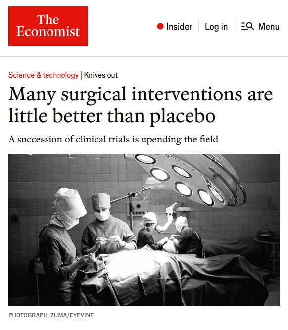

Fitting and breaking models
Research Skills — Week 7 Application
Today's exercises
Today’s plan
16:05
Today’s plan
- A linear model
- Your data: a linear model
- An alternative model
- Your data: an alternative model
- Discussion
- Homework & Wrap-up
Linear models on your data
16:05
| Part | Time | What |
|---|---|---|
| A linear model | 15 + 30 min | My data, your data |
| What is missing? | 15 + 30 min | Building a richer model |
| Where next? | 10 min | Towards a report |
The exercise page has the worked example and your tasks, step by step.
A linear model
16:15
- Today’s plan
A linear model
🎓💻 Watch first
- Your data: a linear model
- An alternative model
- Your data: an alternative model
- Discussion
- Homework & Wrap-up
Wind and solar, 2010–2025
16:15
Your data: a linear model
16:30
- Today’s plan
- A linear model
Your data: a linear model
✏️💻 Your turn
- An alternative model
- Your data: an alternative model
- Discussion
- Homework & Wrap-up
A linear model of your data
16:30
GitHub Desktop: New branch of your group’s repo
Choose a possible linear relationship: one each, if you can
Create a new file in Positron, and work through the exercise page.
An alternative model
17:00
- Today’s plan
- A linear model
- Your data: a linear model
An alternative model
🎓💻 Watch first
- Your data: an alternative model
- Discussion
- Homework & Wrap-up
Another model, and a prediction
17:00
Your data: an alternative model
17:10
- Today’s plan
- A linear model
- Your data: a linear model
- An alternative model
Your data: an alternative model
✏️💻 Your turn
- Discussion
- Homework & Wrap-up
An alternative model of your data
17:10
- No pattern to your residuals? 🎉 You’re golden!
- A curve or a fan? Try
log()of the response, and compare. - Repeating cycles? Try adding a
sin()term as a predictor? - Predict inside your data, and outside it.
- Write it up; what might still be missing?
Discussion
17:35
- Today’s plan
- A linear model
- Your data: a linear model
- An alternative model
- Your data: an alternative model
Discussion
💬 What did you find?
- Homework & Wrap-up
Your project
17:35
“The biggest thing our analysis might be missing is…”
Can you include it?
How profound is the limitation?
Homework & Wrap-up
17:38
- Today’s plan
- A linear model
- Your data: a linear model
- An alternative model
- Your data: an alternative model
- Discussion
Homework & Wrap-up
Commit your work
17:38
Commit your script; open a pull request for your group.
Blackboard announcement
17:41
What to do if you’re falling behind
Expanded rubric in assessment brief
- Accept the report assignment: your own repo for your individual report.
Homework
17:44
“Bias bingo”: Take a sheet on your way out; bring your card to next week’s content session.

The Economist. Reproduced for teaching.
Next week
17:47
“Comparing groups”. Why more than two groups will break the t-test… 🔨
Attendance
17:47
New login? Drag Attendance QR to the favourites bar.